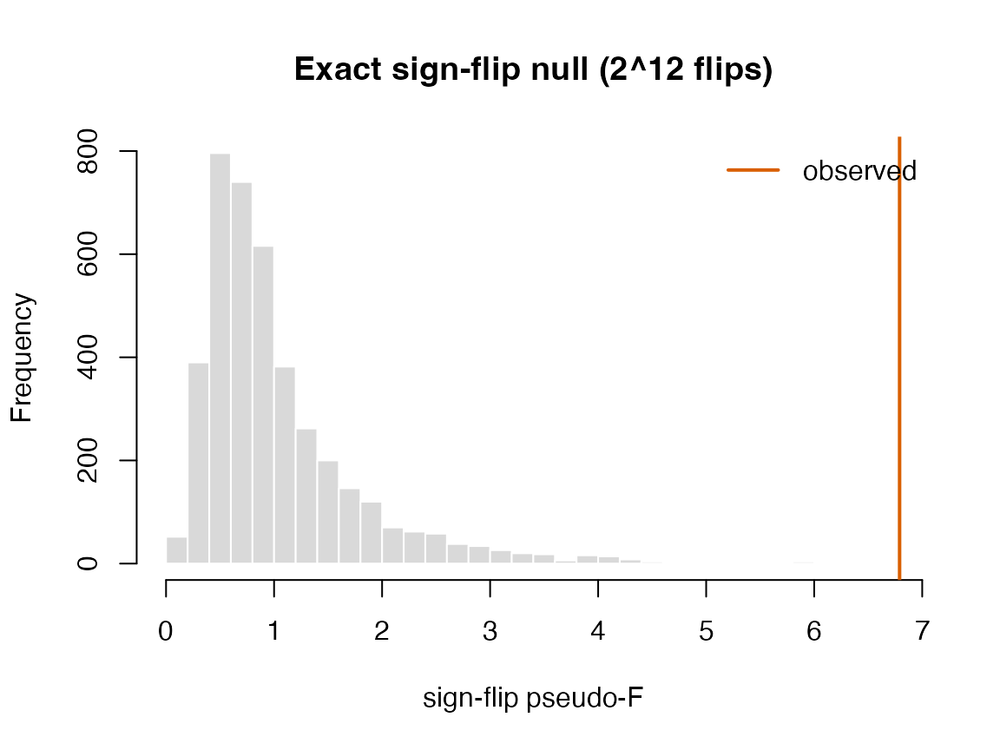

random-slopes.Rmdpermanova_random_slope() supports one deliberately
narrow design: a balanced, complete two-condition comparison with a
correlated random intercept and slope per subject, written
(1 + condition | subject). It tests the population mean
condition change using a subject sign-flip permutation,
which is exact under the null that each subject’s condition-difference
vector is symmetric about zero.
In vegan::pyrifos, the 12 ditches are subjects. We
compare an early post-treatment period (weeks 1–2) with a later period
(weeks 4–8), using the two dates in each period as replicated
observations.
data(pyrifos, package = "vegan")
ditch <- gl(12, 1, length = 132)
week <- factor(rep(c(-4, -1, 0.1, 1, 2, 4, 8, 12, 15, 19, 24), each = 12))
keep <- week %in% c(1, 2, 4, 8)
community <- pyrifos[keep, ]
env <- data.frame(
ditch = droplevels(ditch[keep]),
period = factor(ifelse(week[keep] %in% c(1, 2), "early", "late"),
levels = c("early", "late"))
)
with(env, table(ditch, period))
#> period
#> ditch early late
#> 1 2 2
#> 2 2 2
#> 3 2 2
#> 4 2 2
#> 5 2 2
#> 6 2 2
#> 7 2 2
#> 8 2 2
#> 9 2 2
#> 10 2 2
#> 11 2 2
#> 12 2 2Every ditch contributes two early and two late observations. The
random-slope formula makes the structure explicit: the intercept is the
ditch midpoint and the slope is the complete late - early
community-difference vector.
community_bray <- vegdist(community, method = "bray")
fit <- permanova(community_bray ~ period + (1 + period | ditch), env,
permutations = "all", keep_permutations = TRUE, truncate = TRUE)
fit$design$random_term_table
#> term origin parent variables expression slope correlated
#> 1 1+period|ditch slope <NA> ditch 1 + period | ditch period TRUEpermanova() sees the (1 + period | ditch)
term with a two-level period and routes it to the sign-flip
random-slope engine (a continuous covariate slope,
(1 + x | group), would instead route to
permanova_random_slope_continuous()).
The numerator is the squared norm of the mean ditch difference; the
denominator is variation among ditch difference vectors. Whole
difference vectors receive independent sign flips – observations, dates,
and community coordinates are never permuted separately. With 12 ditches
all 2^12 = 4096 sign assignments are attainable, so the
test is exact.
fit$table
#> Source df SS MS Pseudo-F P(perm)
#> 1 period 1 0.4241459 0.42414594 6.790503 0.0004882812
#> 2 Between-subject random slope 11 0.6870780 0.06246164 NA NA
#> P(MC) Unique perms
#> 1 NA 4096
#> 2 NA NA
fit$fit$test[c("estimand", "exchangeability_units", "attainable_permutations",
"exact_permutation")]
#> $estimand
#> [1] "equally weighted complete-subject condition-difference vectors"
#>
#> $<NA>
#> NULL
#>
#> $attainable_permutations
#> [1] 4096
#>
#> $exact_permutation
#> [1] TRUEThe sign-flip null distribution against the observed statistic:
stat <- fit$fit$test$permutation_statistics
hist(stat, breaks = 30, col = "grey85", border = "white",
xlab = "sign-flip pseudo-F", main = "Exact sign-flip null (2^12 flips)")
abline(v = fit$table$`Pseudo-F`[1], col = "#d95f02", lwd = 2)
legend("topright", "observed", col = "#d95f02", lwd = 2, bty = "n")
The engine reports trace covariance components for the centred ditch
midpoint and the late - early slope, with equal within-cell
noise removed by method of moments. Negative unrestricted components
stay visible; the positive-definite truncation is a separate
sensitivity.
fit$fit$covariance$unrestricted
#> random_intercept random_slope
#> random_intercept 0.053054141 0.003876849
#> random_slope 0.003876849 0.015518980
fit$fit$covariance$intercept_slope_correlation
#> [1] 0.1351101For a Euclidean scalar response the fixed-effect pseudo-F is exactly the squared paired t statistic. For non-Euclidean dissimilarities the complete signed spectrum stays in the empirical sign-flip analysis, while the Gaussian parametric p-value is suppressed.
Because “early/late” is a period label rather than a randomised assignment, this is a population-symmetry analysis, not a causal randomisation test of calendar time. The engine rejects more than two conditions, incomplete subjects, unequal or unreplicated subject-condition cells, extra fixed terms, and numerically zero between-subject slope variation. A multi-level time factor needs a covariance-specific multivariate test rather than an assumed repeated-measures denominator.